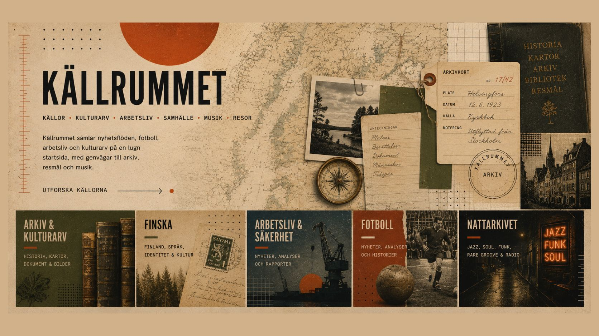

Källrummet – senaste nyheterna, kulturarv, fotboll, logistik och musik

Källrummet samlar de senaste nyheterna, kulturarv och musik på en lugn startsida, med genvägar till arkiv, fotboll, informationssäkerhet och logistik.

Källrummet samlar de senaste nyheterna, kulturarv och musik på en lugn startsida, med genvägar till arkiv, fotboll, informationssäkerhet och logistik.